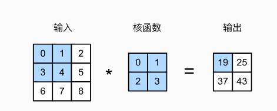
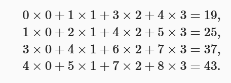
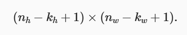
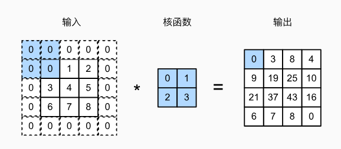
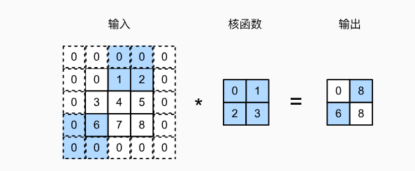
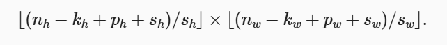
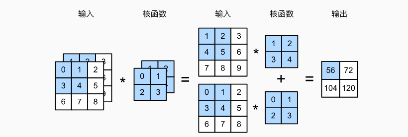
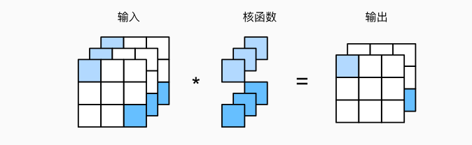
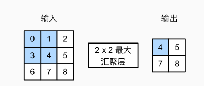
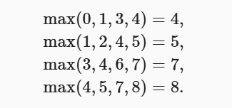

实验任务一： 图像卷积¶
互相关运算¶
如图中所示，考虑一个3x3矩阵作为输入张量，卷积核定义为一个2x2矩阵。

在二维互相关运算中，卷积窗口从输入张量的左上角开始，从左到右、从上到下滑动。 当卷积窗口滑动到新一个位置时，包含在该窗口中的部分张量与卷积核张量进行按元素相乘， 得到的张量再求和得到一个单一的标量值，由此我们得出了这一位置的输出张量值。 在如上例子中，输出张量的四个元素由二维互相关运算得到，这个输出高度为2、宽度为2
具体计算过程如下所示

注意，输出大小略小于输入大小。这是因为卷积核的宽度和高度大于1， 而卷积核只与图像中 每个大小完全适合的位置进行互相关运算。给出如下计算公式计算输出矩阵的大小。

在之前图中例子中，输入为3x3张量，卷积核为2x2张量，那么输出张量形状则为(3-2+1)x (3-2+1)
接下来，我们在corr2d函数中实现如上过程，该函数接受输入张量X和卷积核张量K， 并返回输出张量Y
import torch
from torch import nn
def corr2d(X, K): #@save
"""计算二维互相关运算"""
h, w = K.shape
Y = torch.zeros((X.shape[0] - h + 1, X.shape[1] - w + 1))
for i in range(Y.shape[0]):
for j in range(Y.shape[1]):
Y[i, j] = (X[i:i + h, j:j + w] * K).sum()
return Y
X = torch.tensor([[0.0, 1.0, 2.0], [3.0, 4.0, 5.0], [6.0, 7.0, 8.0]])
K = torch.tensor([[0.0, 1.0], [2.0, 3.0]])
corr2d(X, K)
基于上面定义的corr2d函数实现二维卷积层。在__init__构造函数中，将weight 和bias声明为两个模型参数。前向传播函数调用corr2d函数并添加偏置。
class Conv2D(nn.Module):
def __init__(self, kernel_size):
super().__init__()
self.weight = nn.Parameter(torch.rand(kernel_size))
self.bias = nn.Parameter(torch.zeros(1))
def forward(self, x):
return corr2d(x, self.weight) + self.bias
填充和步幅¶
本节我们将介绍填充（padding）和步幅（stride）。假设以下情景： 有时，在应用了连续的卷积之后，我们最终得到的输出远小于输入大小。 这是由于卷积核的宽度和高度通常大于 所导致的。比如，一个240x240 像素的图像，经过10层 5x5的卷积后，将减少到200x200 像素。如此一来，原始图像的边界丢失了许多有用信息。 而填充是解决此问题最有效的方法； 有时，我们可能希望大幅降低图像的宽度和高度。例如， 如果我们发现原始的输入分辨率十分冗余。步幅则可以在这类情况下提供帮助。
填充¶
如上所述，在应用多层卷积时，我们常常丢失边缘像素。 由于我们通常使用小卷积核， 因此对于任何单个卷积，我们可能只会丢失几个像素。 但随着我们应用许多连续卷积层， 累积丢失的像素数就多了。 解决这个问题的简单方法即为填充（padding）： 在输入图像的边界填充元素（通常填充元素是 0）。 例如，在下图中，我们将3x3输入填充到5x5，那么它的输出就增加为4x4 。 阴影部分是第一个输出元素以及用于输出计算的输入和核张量元素：0x0+0x1+0x2+0x3=0 。

假设我们原张量形状为nxn，卷积核为kxk，我们在原张量的基础上填充A行，在原张量基础上 填充B列，那么在进行互相关运算后，得到的输出形状为(n+A-k+1)x(n+B-K+1), 在图中的例子中，输出初始是3x3，我们在填充了两行（上下各一行）以及两列，那么新的张量 为5x5， 通过运算后，得到形状为(5-2+1)x(5-2+1)
在下面的例子中，我们创建一个高度和宽度为3的二维卷积层，并在所有侧边填充1个像素。 给定高度和宽度为8的输入，则输出的高度和宽度也是8。
import torch
from torch import nn
# 为了方便起见，我们定义了一个计算卷积层的函数。
# 此函数初始化卷积层权重，并对输入和输出提高和缩减相应的维数
def comp_conv2d(conv2d, X):
# 这里的（1，1）表示批量大小和通道数都是1
X = X.reshape((1, 1) + X.shape)
Y = conv2d(X)
# 省略前两个维度：批量大小和通道
return Y.reshape(Y.shape[2:])
# 请注意，这里每边都填充了1行或1列，因此总共添加了2行或2列
conv2d = nn.Conv2d(1, 1, kernel_size=3, padding=1)
X = torch.rand(size=(8, 8))
comp_conv2d(conv2d, X).shape
步幅¶
在计算互相关时，卷积窗口从输入张量的左上角开始，向下、向右滑动。 在前面的例子中 ，我们默认每次滑动一个元素。 但是，有时候为了高效计算或是缩减采样次数， 卷积窗口可以跳过中间位置，每次滑动多个元素。
我们将每次滑动元素的数量称为步幅（stride）。到目前为止，我们只使用过高度或 宽度为1 的步幅，那么如何使用较大的步幅呢？ 下图是垂直步幅为3 ，水平步幅为2 的二维互相关运算。 着色部分是输出元素以及用于输出计算的输入和内核张量元素：

在这里给出输出形状的新计算公式：

其中除法运算均向下取整。以图中举例，初始为3x3，填充2行2列，在水平方向步长为2 ，在竖直方向步长为3，那么有在水平方向有(3-2+2+2)/2=2(注意向下取整)，在竖直 方向(3-2+2+3)/3=2,最后输出为2x2
输出：conv2d = nn.Conv2d(1, 1, kernel_size=(3, 5), padding=(0, 1), stride=(3, 4))
comp_conv2d(conv2d, X).shape
多输入输出通道¶
彩色图像具有标准的RGB通道来代表红、绿和蓝。 但是到目前为止，我们仅展示了单个输入 和单个输出通道的简化例子。 这使得我们可以将输入、卷积核和输出看作二维张量。
当我们添加通道时，我们的输入和隐藏的表示都变成了三维张量。例如，每个RGB输入图像 具有3 x h x w 的形状。我们将这个大小为3的轴称为通道（channel）维度。 本节将更深入地研究具有多输入和多输出通道的卷积核。
多输入通道¶
当输入包含多个通道时，需要构造一个与输入数据具有 相同输入通道数的卷积核，以便与输入数据进行互相关运算。

如图中所示，现在输入形状为2x3x3，即有两个通道，卷积核形状为2x2x2。 图中加深部分计算过程为：(1x1+2x2+4x3+5x4)+(0x0+1x1+3x2+4x3)=56
import torch
from torch import nn
def corr2d(X, K): #@save
"""计算二维互相关运算"""
h, w = K.shape
Y = torch.zeros((X.shape[0] - h + 1, X.shape[1] - w + 1))
for i in range(Y.shape[0]):
for j in range(Y.shape[1]):
Y[i, j] = (X[i:i + h, j:j + w] * K).sum()
return Y
import torch
def corr2d_multi_in(X, K):
# 先遍历“X”和“K”的第0个维度（通道维度），再把它们加在一起
return sum(corr2d(x, k) for x, k in zip(X, K))
X = torch.tensor([[[0.0, 1.0, 2.0], [3.0, 4.0, 5.0], [6.0, 7.0, 8.0]],
[[1.0, 2.0, 3.0], [4.0, 5.0, 6.0], [7.0, 8.0, 9.0]]])
K = torch.tensor([[[0.0, 1.0], [2.0, 3.0]], [[1.0, 2.0], [3.0, 4.0]]])
corr2d_multi_in(X, K)
多输出通道¶
到目前为止，不论有多少输入通道，我们还只有一个输出通道。在最流行的神经网络架构中 ，随着神经网络层数的加深， 我们常会增加输出通道的维数， 通过减少空间分辨率以获得更大的通道深度。

举例来说，如上图所示，输入形状为3x3x3，卷积核为3x1x1x2， 卷积核第一个维度表示3个输入通道,(注意，在实际应用中各个维度代表的含义根据例子 来决定)， 最后一个维度表示2个输出通道，输出形状为2x3x3
如下所示，我们实现一个计算多个通道的输出的互相关函数。
def corr2d_multi_in_out(X, K):
# 迭代“K”的第0个维度，每次都对输入“X”执行互相关运算。
# 最后将所有结果都叠加在一起
return torch.stack([corr2d_multi_in(X, k) for k in K], 0)
K = torch.stack((K, K + 1, K + 2), 0)
K.shape
下面，我们对输入张量X与卷积核张量K执行互相关运算。现在的输出包含3 个通道，
X = torch.tensor([[[0.0, 1.0, 2.0], [3.0, 4.0, 5.0], [6.0, 7.0, 8.0]],
[[1.0, 2.0, 3.0], [4.0, 5.0, 6.0], [7.0, 8.0, 9.0]]])
corr2d_multi_in_out(X, K)
汇聚层¶
通常当我们处理图像时，我们希望逐渐降低隐藏表示的空间分辨率、聚集信息， 这样随着我们在神经网络中层叠的上升，每个神经元对其敏感的感受野（输入）就越大。
本节将介绍汇聚（pooling）层，它具有双重目的： 降低卷积层对位置的敏感性，同时降低对空间降采样表示的敏感性。
最大汇聚层和平均汇聚层¶
与卷积层类似，汇聚层运算符由一个固定形状的窗口组成，该窗口根据其步幅大小在输入的 所有区域上滑动，为固定形状窗口（有时称为汇聚窗口）遍历的每个位置计算一个输出。 然而，不同于卷积层中的输入与卷积核之间的互相关计算，汇聚层不包含参数。 相反，池运算是确定性的，我们通常计算汇聚窗口中所有元素的最大值或平均值。 这些操作分别称为最大汇聚层（maximum pooling）和平均汇聚层（average pooling）。
在这两种情况下，与互相关运算符一样， 汇聚窗口从输入张量的左上角开始，从左往右、从上往下的在输入张量内滑动。 在汇聚窗口到达的每个位置，它计算该窗口中输入子张量的最大值或平均值。 计算最大值或平均值是取决于使用了最大汇聚层还是平均汇聚层。

图中的输出张量的高度为2，宽度为2 。这四个元素为每个汇聚窗口中的最大值：

在下面的代码中的pool2d函数，我们实现汇聚层的前向传播。 然而，这里我们没有卷积核，输出为输入中每个区域的最大值或平均值。
import torch
from torch import nn
def pool2d(X, pool_size, mode='max'):
p_h, p_w = pool_size
Y = torch.zeros((X.shape[0] - p_h + 1, X.shape[1] - p_w + 1))
for i in range(Y.shape[0]):
for j in range(Y.shape[1]):
if mode == 'max':
Y[i, j] = X[i: i + p_h, j: j + p_w].max()
elif mode == 'avg':
Y[i, j] = X[i: i + p_h, j: j + p_w].mean()
return Y
汇聚层填充与步幅¶
与卷积层一样，汇聚层也可以改变输出形状。和以前一样， 我们可以通过填充和步幅以获得所需的输出形状。 下面，我们用深度学习框架中内置的二维最大汇聚层， 来演示汇聚层中填充和步幅的使用。 我们首先构造了一个输入张量X，它有四个维度，其中样本数和通道数都是1。
默认情况下，深度学习框架中的步幅与汇聚窗口的大小相同。 因此，如果我们使用形状为(3, 3)的汇聚窗口， 那么默认情况下，我们得到的步幅形状为(3, 3)。多个通道¶
在处理多通道输入数据时，汇聚层在每个输入通道上单独运算， 而不是像卷积层一样在通道上对输入进行汇总。 这意味着汇聚层的输出通道数与输入通道数相同。 下面，我们将在通道维度上连结张量X和X + 1，以构建具有2个通道的输入。
tensor([[[[ 0., 1., 2., 3.],
[ 4., 5., 6., 7.],
[ 8., 9., 10., 11.],
[12., 13., 14., 15.]],
[[ 1., 2., 3., 4.],
[ 5., 6., 7., 8.],
[ 9., 10., 11., 12.],
[13., 14., 15., 16.]]]])
练习 图像中目标的边缘检测¶
如下是卷积层的一个简单应用：通过找到像素变化的位置，来检测图像中不同颜色的边缘。 首先，我们构造一个 6x8像素的黑白图像。中间四列为黑色（0），其余像素为白色（1）。
tensor([[1., 1., 0., 0., 0., 0., 1., 1.],
[1., 1., 0., 0., 0., 0., 1., 1.],
[1., 1., 0., 0., 0., 0., 1., 1.],
[1., 1., 0., 0., 0., 0., 1., 1.],
[1., 1., 0., 0., 0., 0., 1., 1.],
[1., 1., 0., 0., 0., 0., 1., 1.]])
def corr2d(X, K): #@save
"""计算二维互相关运算"""
h, w = K.shape
Y = torch.zeros((X.shape[0] - h + 1, X.shape[1] - w + 1))
for i in range(Y.shape[0]):
for j in range(Y.shape[1]):
Y[i, j] = (X[i:i + h, j:j + w] * K).sum()
return Y
Y = corr2d(X, K)
Y
tensor([[ 0., 1., 0., 0., 0., -1., 0.],
[ 0., 1., 0., 0., 0., -1., 0.],
[ 0., 1., 0., 0., 0., -1., 0.],
[ 0., 1., 0., 0., 0., -1., 0.],
[ 0., 1., 0., 0., 0., -1., 0.],
[ 0., 1., 0., 0., 0., -1., 0.]])
tensor([[0., 0., 0., 0., 0.],
[0., 0., 0., 0., 0.],
[0., 0., 0., 0., 0.],
[0., 0., 0., 0., 0.],
[0., 0., 0., 0., 0.],
[0., 0., 0., 0., 0.],
[0., 0., 0., 0., 0.],
[0., 0., 0., 0., 0.]])
````
1.请使用Conv2D类,补全训练部分代码，
使得训练得到的卷积核参数接近torch.tensor([[1.0, -1.0]])
```bash
class Conv2D(nn.Module):
def __init__(self, kernel_size):
super().__init__()
self.weight = nn.Parameter(torch.rand(kernel_size))
self.bias = nn.Parameter(torch.zeros(1))
def forward(self, x):
return corr2d(x, self.weight) + self.bias
# 构造一个二维卷积层，它具有1个输出通道和形状为（1，2）的卷积核
conv2d = nn.Conv2d(1,1, kernel_size=(1, 2), bias=False)
# 这个二维卷积层使用四维输入和输出格式（批量大小、通道、高度、宽度），
# 其中批量大小和通道数都为1
X = X.reshape((1, 1, 6, 8))#
Y = Y.reshape((1, 1, 6, 7))#标签
#训练补全部分(自定义损失函数，训练epoch，学习率等)
#TODO：for循环epoch次
#TODO：前向传播
#TODO：计算损失
#TODO: 清除梯度
#TODO: 反向传播
#TODO: 更新参数